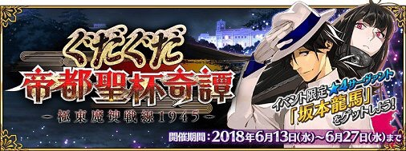
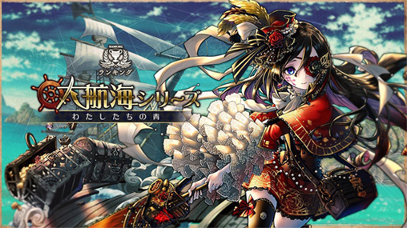
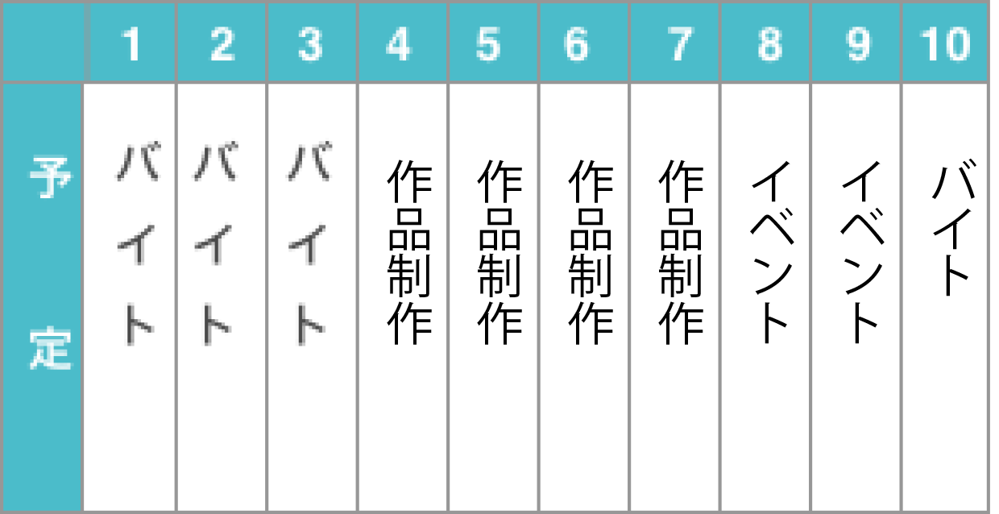
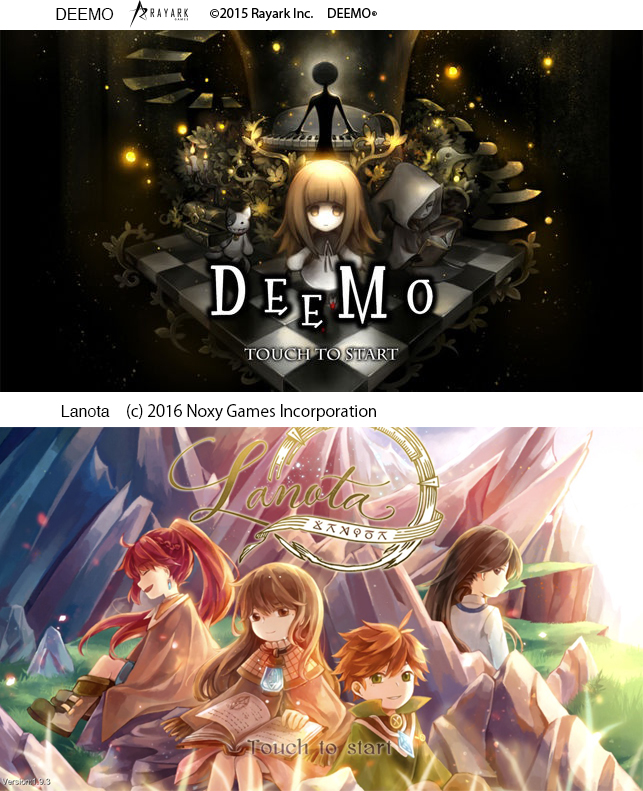
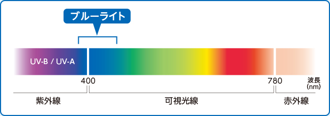
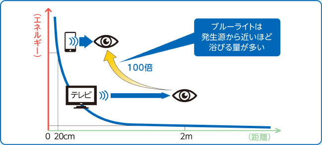
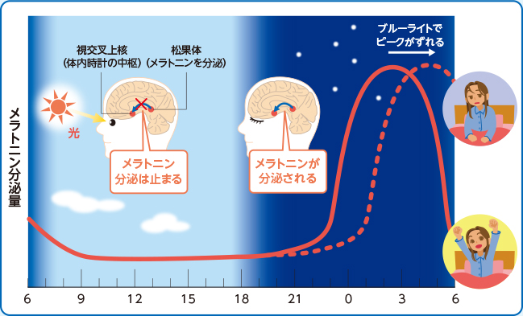

みなさん はじめまして(>艸<○) 美大生ゲーマー・ののです。
ふと外に出て電車に乗ったり、お店に行くとスマホや携帯電話を手にする人々で溢れてます。私も通勤通学や作品制作でインターネットサーフィンやSNS、ゲームでオンラインを使ってます。現代の人々にとってインターネットを使うというのは当たり前の生活だと思います。
そこでこんな企画がやってまいりました。
その名も「１０日間オフラインチャレンジ」＼(*≧◇≦)／
といっても丸一日オフラインで過ごす訳じゃなくて、一定期間、決められた時間にオフラインで過ごしてみたらどうなるか挑戦してみようと思います！
今回はインターネットの使用時間が長い17時から21時の時間帯で日常的に利用しているスマホでのオフライン生活の記録をまとめていきます。果たしてソシャゲイベント周回中でもオフラインで耐えられたのでしょうかーー！？


(上)Fate Grand Order ©TYPE-MOON / FGO PROJECT (下)消滅都市 © Wright Flyer Studios
1
おふらいん生活 はじまる
さて、１０日間のスケジュールはこちら！
全体的に予定の半分ほどがバイトだったのでインターネットの使用時間が長い17時から21時の時間帯でも比較的オフライン環境でも過ごしやすかったです。

まずはオフライン環境でのゲームについて
オフライン環境で一番懸念していたのは、ゲームのイベントが走れないこと。ほどんどのアプリゲームは基本無料のアイテム課金制なので、その分イベント周回するのに時間がかかります。
いつも自由に時間を過ごせるのは夜なので、２、３時間延々と複数タイトルのクエストを周回しているのだけど今回はそれができないのでどうなることやら……。
もちろんイベント開催中以外のゲームもプレイしたい……。しかしオフラインだとできな………
できた━━━(ﾟ∀ﾟ)━━━！！！！

上記のゲームは台湾産リズムゲームの『DEEMO』と『Lanota』なのですが、この２タイトルは一部の機能は利用できないものの、オフラインでも遊べるようになっていました。飛行機などオンライン環境ではない場所にいる時にでもプレイヤーに負担がかからずにサービスが提供、インターネットにアクセスしない分、動作が速くなっています。
スマホゲームの場合、オフライン対応しているのは海外産のものが多かったです。
ただ、アプリの場合にオフラインで設計されているものはストレージに保存されるデータ量が多くなるのではないかと思うのです。
スマホゲームの他にもカーナビや防災用のアプリもオフラインで使えるものがあり、なにか非常事態が起きた時にも連絡手段などがあると便利なので、もっとオフラインで使えるアプリが増えて欲しいです(๑ÒωÓ๑)
2
オンライン環境への依存
作品制作中に気づいたのだけれど、アイディア出しの時にインターネットが使えないのがとても不便だということです。本だと荷物になるし、画材がぱんぱんに入ったリュックや鞄に入れられるスキマもないので、いつもはインターネットで調べてブックマークしているのだけれど、オフラインだとそれができない。本で調べるにも一発で求めているものが見つかるとも限らないので効率が悪いと思うとともに、いかに自分がオンライン環境に頼っているのか実感しました。
今はスマホが１台あれば電話やメールの他にもショッピングや写真撮影など、幅広いサービスを受けることができますが、できることが増えたことで人はスマホ、携帯電話などの媒体に依存されていると感じています。最近だとWHOがゲーム依存を精神疾患の一つ『ゲーム障害として追加したことが話題になっているけれど、では何故人はゲームに依存してしまうのでしょうか。
ゲーム依存のメカニズムとは
ゲームの中でもオンライン環境のスマホゲームに焦点を当てて調べてみたところ、スマホゲームは心理テクニックが使われているそうです。
例えばゲームオーバーになった時に課金アイテムでコンティニューできる仕組みは損失回避といって、はじめからクエストを進めるリスクよりはアイテムを使って続きからプレイして確実に報酬を手に入れたいという心理が働いているのです。イベントも同じくもう少しやりこめば限定アイテムが手に入ると思ってプレイしていると、いつの間にか長時間プレイしてしまい、なかなかやめられなかったりします。
また、時間をかけて頑張って進めたゲームのデータを手放すのはもったいないので、ゲームをやめることが難しくなり、次第に生活リズムがゲームに合わせたものになってしまう恐れもあるのです。
私もついつい長時間ゲームをしてしまうことがあるので、自分にあった解決策を考えないといきたいです。
3
睡眠との関係性
期間中１日だけ寝落ちした日があったのですが、次の日の寝起きがスッキリ目覚められたので寝る前のスマホを使わないようにした方がいいって聞いたことがあるのでこれもインターネッツで調べてみたのさ〜
武田薬報webによると、ブルーライトっていうのは波長が380～500nm（ナノメートル）の人の目で見ることのできる光の中で最も波長が短く、強いエネルギーを持っており、角膜や水晶体で吸収されずにどーんと網膜まで届いてしまうらしいのです((((；ﾟДﾟ))))ｶﾞｸｶﾞｸﾌﾞﾙﾌﾞﾙ


個人差はあるけれど、デスクワークだと肩が凝るとか目が疲れたりするけどこれはブルーライトの光を見ると疲れやすくなるそうなるほかに、ブルーライトによる刺激が夜にもあると、睡眠ホルモンであるメラトニンの分泌の時間がずれて朝起きても寝たりなく感じるそうです。

武田薬報webより https://takeda-kenko.jp/yakuhou/feature/bluelight/vol01.html
４
オンラインだからこそ繋がれる
オンライン環境によるデメリットや注意したほうがいいことを結構書いてきたけれど、もちろんオンライン環境だからこそいいこともありました。
この企画中に友達と某ゲームのコラボカフェに行ってきたのだけれど、その子とは今までSNS上でしか話したことがなかったのでお互い好きなゲームの話をしたり、グッズを買いに回ったりと、オフラインだったら会話したり一緒に出かけたりすることはなかったと思うから、オンライン環境をきちんと使い分けられたら、自分の知識や人間関係が広がるとっても便利なものだと思いです。
ここでインターネットに関する名言を紹介したいと思います(((ﾉ´ω｀)ﾉ~))